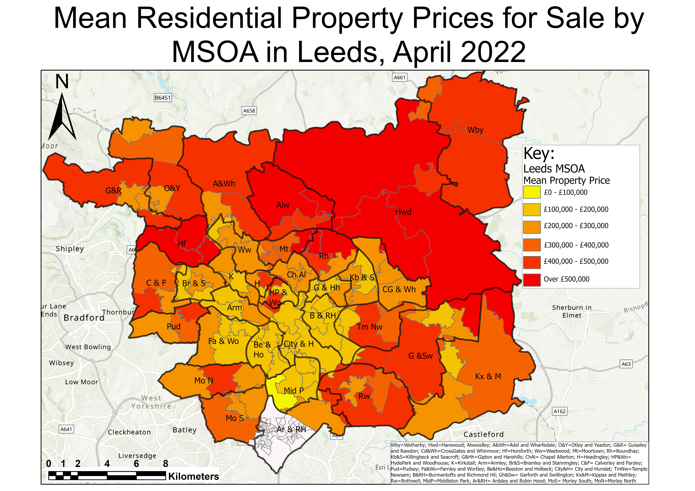

Leeds Property Prices Over The Last 20 Years
The UK housing market has been steadily increasing year after year however, as of April 2022, residential property prices are at the highest it's ever been, leaving many individuals and families struggling to afford buying a house! This also puts a large amount of strain on first-time buyers as well. The recent pandemic has caused this large increase in property price, and many people in the UK are struggling to accomodate this due to the pandemic significantly effecting the UK job market. Nonetheless, the increase of house prices is inevitable, as house values rise over time. Based on the collected data from Zoopla, the results have been plotted on Leeds MSOA showing areas with the highest and lowest property prices. There are a few MSOA void of current data nonetheless, the data is consistent with trends seen in the maps further underneath, which have been released by the ONS (Office of National Statistics). The only stark contrast is the rates seen in Hyde Park and Woodhouse, and Headingley. However, these properties are commonly associated with student-living thus, many property investments occur within these areas, where large properties are bought and separated into individual flats.

Map showing the mean residential property prices on sale throughout Leeds during April 2022.
Using data provided by ONS (Office of National Statistics), we can take a more detailed approach and look at the mean house prices for each LSOA in Leeds, as house prices can vary significantly over Wards. Below are three maps that show the mean residential property price per LSOA throughout Leeds over the past 20 years (2001-2021). There are areas where there is data missing however, these areas can be be assumed to be around the same mean price as their neighbouring OA's. The maps show that over the past 20 years there has been significant changes to property prices. Eastern, Central and Southern Leeds have all increased from an average mean property price of between £0-£100,000 in 2001 to £100,000-£300,000 in 2021, with some OA's in Far-Southern Leeds at rates between £300,000-£400,000. The Northern and Western areas of Leeds have always had higher property prices, with many OA's in 2021 ranging from £400,000-£500,000 and many over £500,000.

Map showing the mean residential property prices per LSOA throughout Leeds at September 2021. (Data source: ONS)

Map showing the mean residential property prices per LSOA throughout Leeds at September 2011. (Data source: ONS)